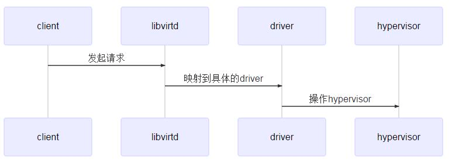

libvirt 简介
libvirt 是用于管理虚拟化平台的开源API、后台程序和管理工具。
它对上层云管平台提供一套 API 接口，libvirt 也自带了一个 virsh 工具可以用来控制虚机的生命周期，包括创建、删除、修改虚机。
本文中使用的 libvirt 版本为 7.3.0。
libvirt 命令增添步骤
目前 libvirt 已经提供了强大的 API 支持，但由于云上环境比较复杂，有时需要新定义一个 libvirt API 接口。
由于每添加一个 API 接口几乎就要添加一个新的 RPC 调用，所以添加的文件非常多。
以增添一个 cmdHelloWorld 为例，总共包括以下步骤：
- virsh 命令的添加
- API 接口的添加
- RPC 的添加
由于添加 API 接口的步骤过长，本文先给大家介绍如何添加一个新的 virsh 命令。
增添一个 virsh 命令
所有 virsh 命令的相应函数及其后传递的命令行参数都是在 virsh-domain.c 中。
virsh 命令是指 virsh 后面跟的第一个命令行参数。本文我们以 virsh helloworld 为例教大家如何添加一个 helloworld 命令。
增添 helloworld 函数 cmdHelloWorld
命令的响应函数是 cmdHelloWorld。也就是执行 virsh helloworld 后将调用的函数。
这个函数由 virsh 进程调用，最终调用 cmdHelloWorld。
cmdHelloWorld 再调用 RPC 与计算结点的守护进程 libvirtd 交互。
为 helloworld 增添新的命令行参数
virsh helloworld 后我们设置了以下几个命令行参数：
-
--local：表示与本地的 libvirtd 相连。 -
--help：显示帮助信息。
libvirt 描述命令行参数是用 vshCmdOptDef 数组表示，也就是 --local 要添加到 vshCmdOptDef 数组中。
而 virsh helloworld --help 要显示的信息添加到 vshCmdInfo 数组中。
相应代码实现
命令行参数实现
1 | static const vshCmdInfo info_helloworld[] = { |
vshCmdOptDef opts_helloworld[]：表示的是 virsh helloworld 后要接的两个命令行参数的描述。 vshCmdInfo info_helloworld[]: 是 virsh helloworld --help 所显示的描述打印。
cmdHelloWorld 实现
为了让示例程序最简单化，我们把virsh helloworld 的工作就是打印hello world字符串。
1 | static bool |
把 helloworld 命令添加进 vshCmdDef domManagementCmds[] 中
virsh 命令的命令行和处理函数都要注册到 domManagementCmds[] 中。
我们把刚刚添加的数据结构 vshCmdOptDef、vshCmdInfo 还有处理函数 cmdHelloWorld 添加到 domManagementCmds[] 中。
1 | const vshCmdDef domManagementCmds[] = { |
编译、调试并运行新增的命令
centos 佩带的 libvirt 的 src.rpm 包的编译使用的是 spec 文件, 执行 rpmbuild -ba libvirt.spec 的时候会把配置、编译一气合成。
但当我们对自己修改的 libvirt 代码配置的时候，最好不要用 centos 的 spec 里的配置，如果按照 spec 里的配置，在启动我们的 libvirtd 的时候还要先执行 systemctl stop libvirtd 把系统的 libvirtd 的进程停掉。
所以下面分享一下我自己配置和调试 libvirt 的技巧。
配置、编译和安装过程
配置不加任何参数：
1 | ./configure |
编译就不用多说了：
1 | make -j 50 |
后面这步很重要，每次编译后，都要重新卸载再进行安装，否则新编译的代码可能不会出现在 libvirtd 当中。
1 | make uninstall |
手动启动 libvirtd
libvirtd 是 libvirt 的守护进程，libvirt 的 API 接口几乎都是通过 RPC 调用链接到 libvirtd。virsh 命令就像一个 client 端，libvirtd 是服务端，virsh 的执行需要依靠 libvirtd。所以我们需要把 libvirtd 手动的拉起来。
1 | ./daemon/libvirtd & |
使用的virsh 文件的路径
使用 ./tools/.libs/virsh 命令行执行。
注意，用 gdb 跟踪时使用 ./tools/.libs/virsh，不要使用 ./tools/virsh，因为 ./tools/virsh 只是个脚本。
执行结果
执行结果如下：
1 | # virsh helloworld --local |
添加一个 API 接口
上面我们讲过了创建 libvirt API 接口的完整步骤，并且讲述了添加一个新的 virsh 命令的步骤。
但是添加的 virsh 命令并没有调用 API 接口。而真正的 virsh 命令一般都是借助 libvirt 的 API 接口来完成的。
下面就为大家介绍如何添加一个 API 接口，并且介绍 API 接口是如何通过 RPC 调用与守护进程 libvirtd 通信的。
完整的 API 函数流程

添加 virConnectHelloWorld 函数
libvirt-domain.c
上一节中实现的 cmdHelloWorld 函数没有调用任何 libvirt API。
但实际上 virsh 命令都是调用 API 函数来实现功能的，同时这个文件里的函数也会给上层业务调用。
例如在云服务上创建虚机都是直接调用 virDomainCreateXML 函数，并不是通过 virsh create aaa.xml 这种方式。
下面给出 cmdHelloWorld 的完整实现：
1 | extern int virConnectHelloWorld(virConnectPtr dconn, char **printout); |
src/libvirt_public.syms
在 virsh-domain.c 中加入了 virConnectHelloWorld 的函数声明，但在编译过程中还是会报错。原因是要在 libvirt_public.syms 文件中加入：
1 | LIBVIRT_7.3.0 { |
添加一个 RPC 调用
添加 RPC client 调用
libvirt API 完整的函数流程中是要通过 RPC 调用和 libvirtd 进行通信。
下面我们把实现完全的代码贴上:
virConnectHelloWorld 的入参 virConnectPtr dconn 中的 driver 是一个很关键的字段。描述了 RPC 调用的 client 端和 server 端回调函数的声明。
1 | struct _virConnect { |
src/driver-hypervisor.h
给 _virHypervisorDriver 加入 virDrvConnectHelloWorld 字段，并且添加 virDrvConnectHelloWorld 的定义。
1 | typedef int |
src/remote/remote_driver.c
在 driver-hypervisor.h 中只是给 _virHypervisorDriver 添加了一个字段，还需要给出 RPC 调用的实现函数。
virConnectHelloWorld 函数作为 RPC 的 client 端的实现如下：
1 | static int remoteConnectHelloWorld(virConnectPtr conn, char **printout) |
函数的开头使用了 RPC 请求的返回值结构体 remote_connect_hello_world_ret，这个结构体的定义是自动生成的，模板会在 remote_protocol.x 中给出。
call 函数中的入参 REMOTE_PROC_CONNECT_HELLO_WORLD 是RPC 请求调用号。也是在 remote_protocol.x 中添加。
最后从 ret.printout 取出来自 libvirtd 返回的字符串。
注意: 给 hypervisor_driver->connectHelloWorld 赋值时, 后面的 /* 7.3.0 */ 版本号必须要加上不然 hvsupport.pl 在执行的时候会报错。
./src/remote/remote_protocol.x
增添 remote_connect_hello_world_ret 的模板，并且在 enum remote_procedure 的枚举类型中给出 RPC 号的具体数值。
1 | struct remote_connect_hello_world_ret { |
./src/rpc/gendispatch.pl
以上几个文件会被 gendispatch.pl 文件解析自动生成 remote_protocol.h，remote_protocol.c 和 remote_daemon_dispatch_stubs.h 文件。
这个文件在运行时会检查上面内容添加是否齐全。
添加 RPC server 端调用
libvirtd 充当 RPC 调用的 server 端，remoteDispatchConnectHelloWorld 函数是由 libvirtd 执行的，作为 server 端的响应函数。
src/remote/remote_daemon_dispatch_stubs.h
增添了 remote_protocol.x 编译后系统会自动生成 remote_dispatch.h 文件，并自其中自动生成 server 端 RPC 处理函数：remoteDispatchConnectHelloWorldHelper。
同时 remote_daemon_dispatch_stubs.h 中会添加 remoteDispatchConnectHelloWorld 函数声明。
remoteDispatchConnectHelloWorld 函数作为 RPC server 端的响应函数需要在 remote_daemon_dispatch_stubs.h 中自己手动实现。
1 | static int |
src/qemu/qemu_driver.c
libvirtd 是 RPC 的 server 端，virConnectHelloWorld 采用的 connectHelloWorld 回调函数与 RPC clinet 端不同。
这里要新添加一个 qemuConnectHelloWorld 函数作为 RPC server 端的处理。
1 | static int qemuConnectHelloWorld(virConnectPtr conn, char **printout) |
执行结果
1 | # virsh helloworld --local |
执行结果与第 3 节一样，但不同的是这次的 “hello, world” 是 virsh 命令通过 RPC 调用从 libvirtd 守护进程中拿过来的。